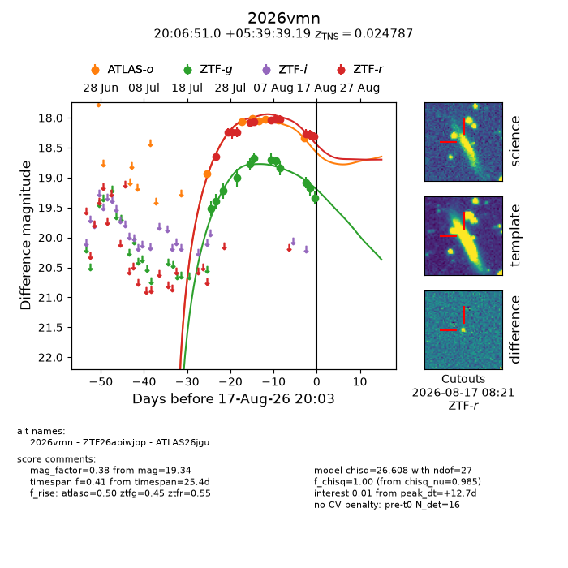
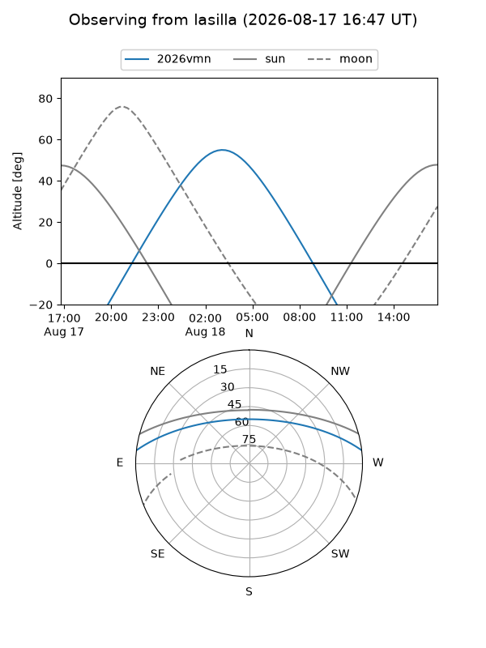
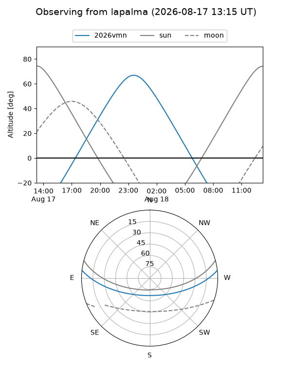
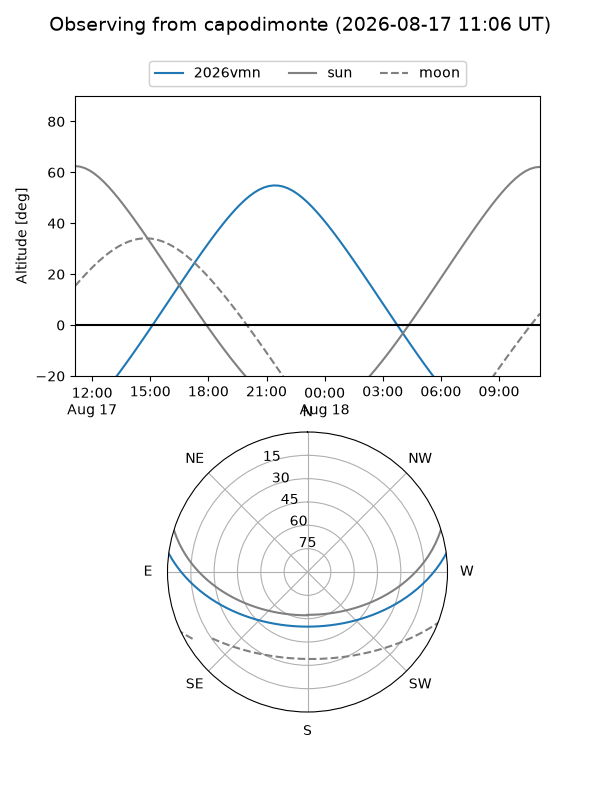
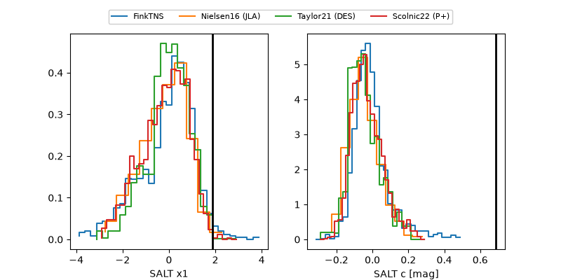

2026vmn
Target 2026vmn at 2026-08-17 20:07
Aliases and brokers:
FINK-ZTF: ztf.fink-portal.org/ZTF26abiwjbp
Lasair-ZTF: lasair-ztf.lsst.ac.uk/objects/ZTF26abiwjbp
ALeRCE-ZTF: alerce.online/object/ZTF26abiwjbp
YSE-PZ: ziggy.ucolick.org/yse/transient_detail/2026vmn
TNS name: wis-tns.org/object/2026vmn
Direct TNS query: direct search
alt names
ZTF26abiwjbp (ztf,fink_ztf)
2026vmn (tns,yse)
ATLAS26jgu (atlas)
Coordinates:
equatorial (ra, dec) = 301.7124,+5.66089
equatorial (HMS+DMS) = 20:06:50.99,+05:39:39.19
galactic (l, b) = (46.9099,-13.95799)
Flags:
TNS type: SN Ia
TNS redshift: 0.0248
peak dt: +12.7
Photometry:
last atlaso=18.33, ztfg=19.34, ztfr=18.31
7 atlaso, 12 ztfg, 12 ztfr detections
Lightcurve

Visibility



Additional plots
